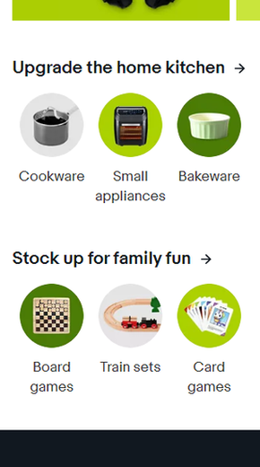
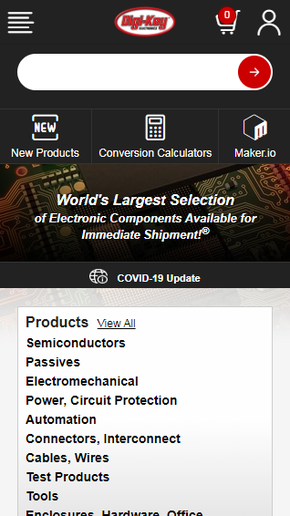
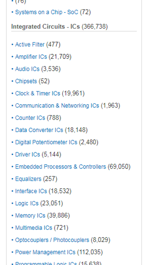

White Space and Clean Design
eBay
eBay.com
This screenshot of an eBay page is a great example of White Space and Clean Design. There is plenty of open space which makes the page look clean and clutter free making the page clearer to the user.
Contrast
Digikey
Digikey.com
This screenshot from Digikey.com is an example of contrast. The top part of the page is primarily a black or dark gray. The text here is white and some buttons and the company's logo are bright red, which both pop out nicely with the dark background.
Alignment
Mouser
Mouser.com
This screenshot from a Mouser page is a simple example of alignment. The list on the page is all left aligned which helps users more naturally read it because in many languages including English, people read from left to right.